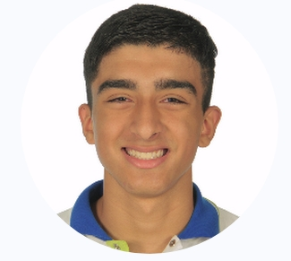
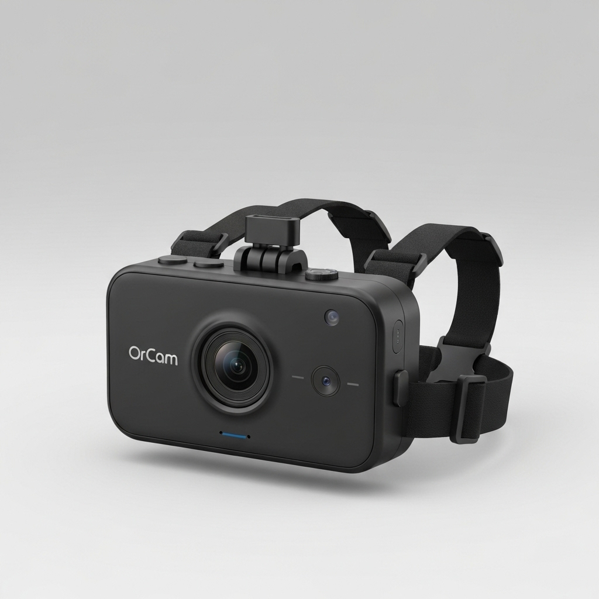
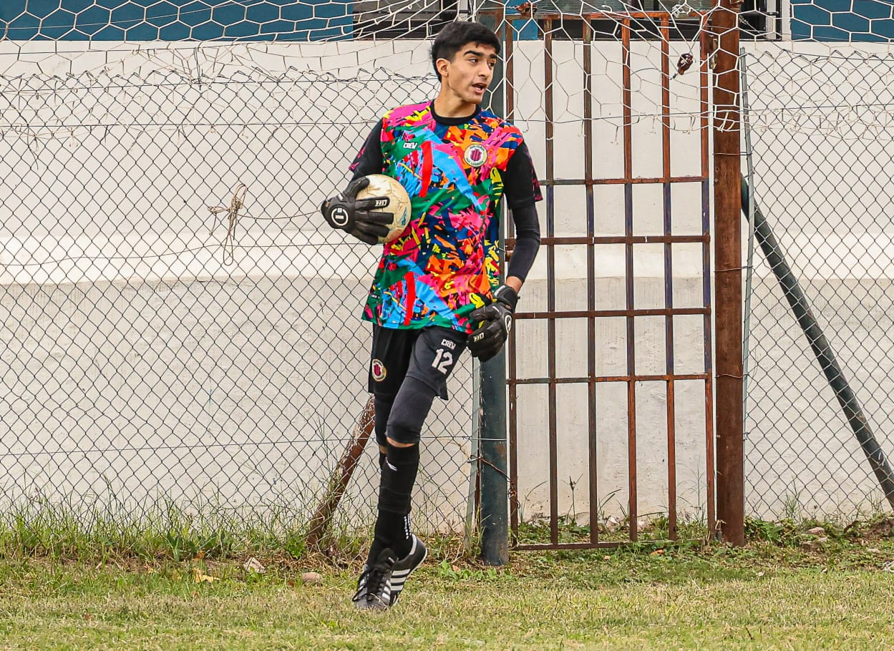

Perceptrum
Enzo Franceschi

Hola, soy Enzo Franceschi, miembro de Perceptrum. Nuestro proyecto Firm Step
ayuda a personas invidentes mediante una cámara que detecta los obstaculos del entorno y
avisa por auriculares a traves de una voz de posibles peligros a su alrededor.

Un poco sobre mí
Soy estudiante de 5º año, tranquilo, alegre y apasionado por el fútbol como arquero.
Mi sueño es llegar a Europa a jugar profesionalmente.
También me gusta programar videojuegos y editar videos.

Habilidades
- Trabajo en equipo
- Sociable y fácil para conocer gente
- Programación de videojuegos
- Edición de video
Conocimientos
Manejo HTML, CSS y algo de JavaScript. Uso ChatGPT para mejorar diseño y estilos.
Qué deseo para el futuro
En 3-5 años, si no soy futbolista profesional, estudiaré Sistemas, Ciberseguridad o Electromecánica. Seguiré programando y editando videos como hobby.